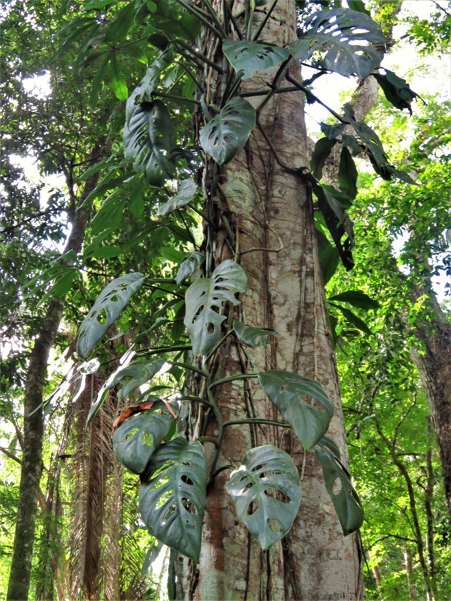
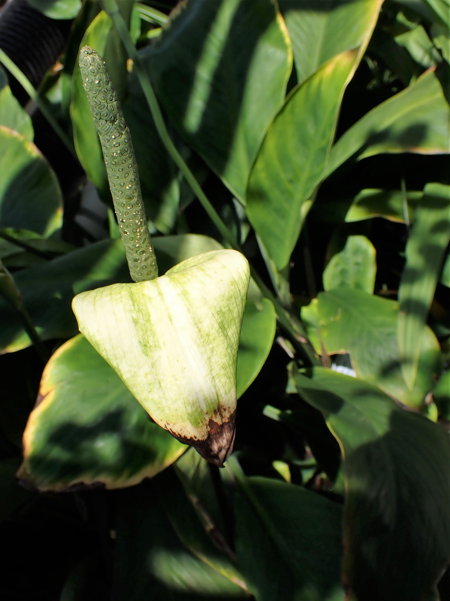
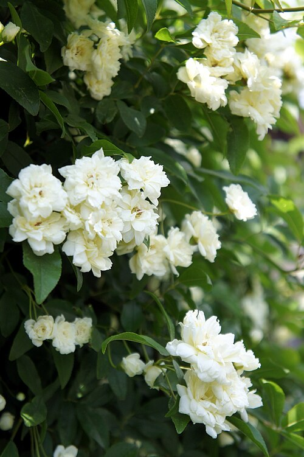
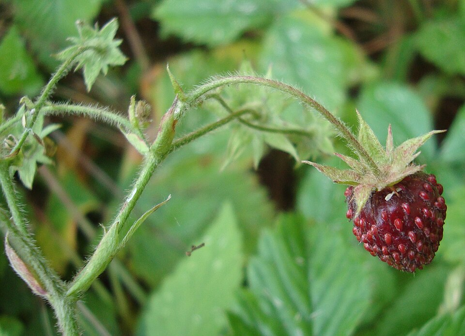
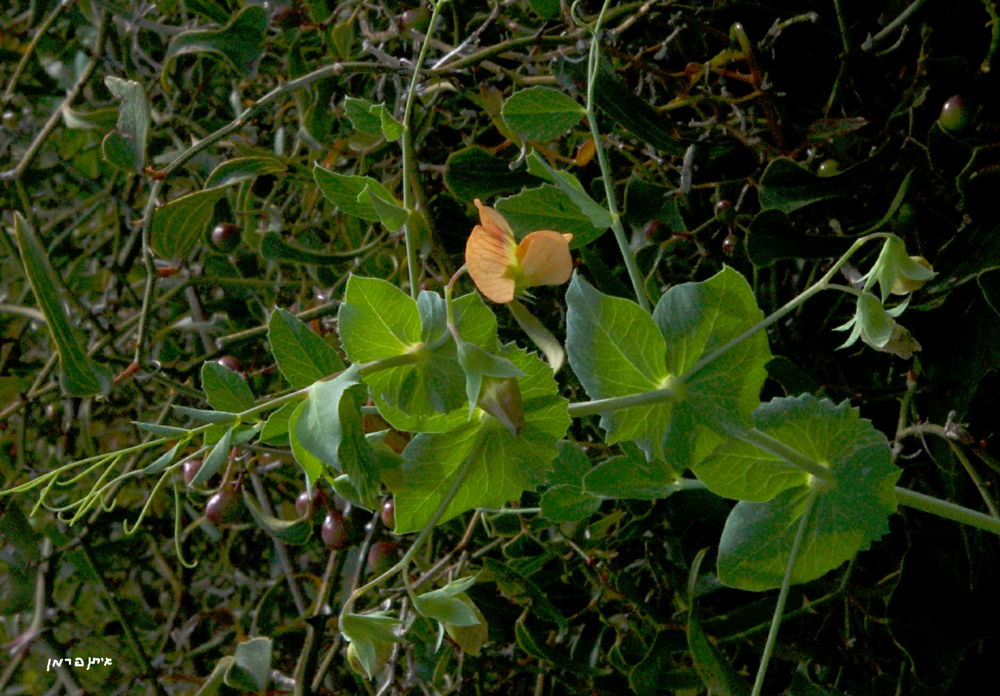
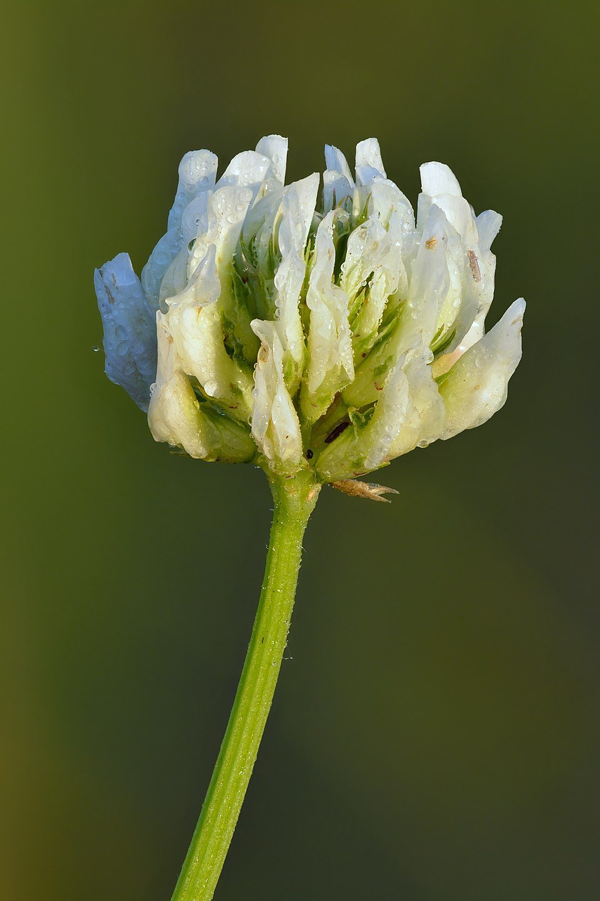
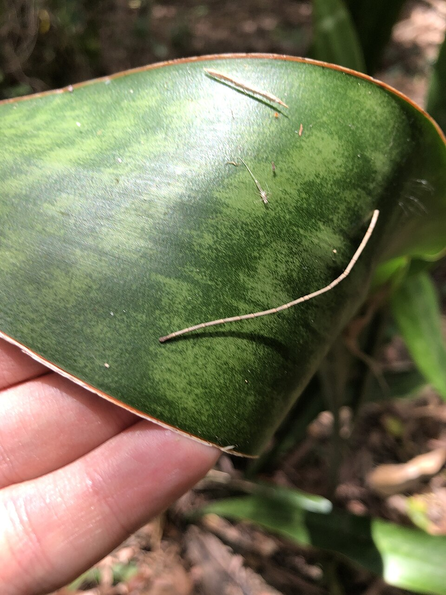
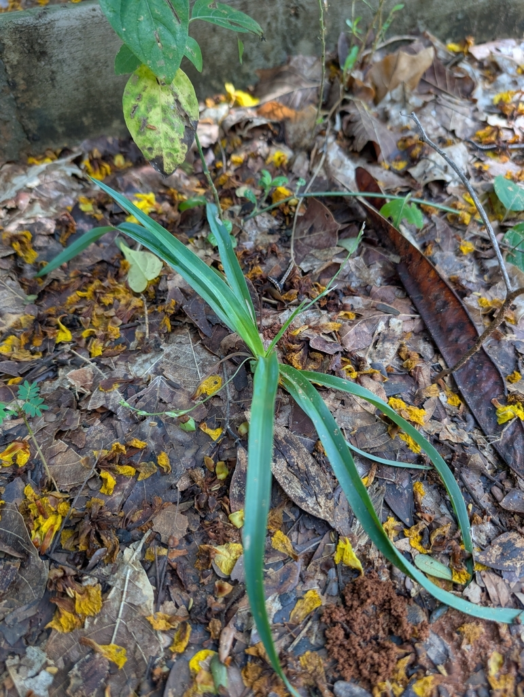

Swiss cheese plant
Monstera deliciosa
📍 Native: Southern Mexico to Panama
Wide, glossy leaves that develop fenestrations as the plant matures. Climbs by aerial roots in its native range.
The full specimen record — every plant logged individually, with its complete classification and an accession number. Follow a tag up to its genus or family record.
Wide, glossy leaves that develop fenestrations as the plant matures. Climbs by aerial roots in its native range.

A tropical climbing vine native to Central America and Mexico, famous for its unique "shingle" growth habit and holey leaves.

Dark lance-shaped leaves and a single white spathe curling around a pale spadix. Tolerant of low light.

A tropical, evergreen herbaceous perennial belonging to the Araceae (arum) family.

A scrambling hedgerow rose with pale pink flowers and hooked thorns along an arching stem.

A fast-growing, nearly thornless climbing shrub native to central and western China.

Trifoliate leaves and small white flowers, followed by fruit far smaller than its cultivated relatives.

A European wild strawberry species prized for its intensely aromatic, uniquely flavored fruit.

A climbing annual with tendrilled compound leaves, grown for the seed pods it sets after flowering.

A wild annual plant belonging to the legume family (Fabaceae) and a close wild relative of the cultivated garden pea.

A familiar forage legume with three-part leaves and rounded heads of pink-red flowers.

A low-growing perennial clover with creeping stems, three-part leaves and rounded heads of white flowers.

Stiff, upright leaves banded in mottled green. Reclassified from Sansevieria in recent revisions.

A rare, iconic evergreen tree famous for its dense, umbrella-shaped canopy and crimson-red resin.

Arching grass-like leaves that send out long runners tipped with plantlets.

A small, tuberous perennial herb in the asparagus family that grows 20 to 50 cm tall.
WikiPlant is powered by a community of plant enthusiasts. See who is building our database or join us to share your own knowledge.
Meet Our Contributors